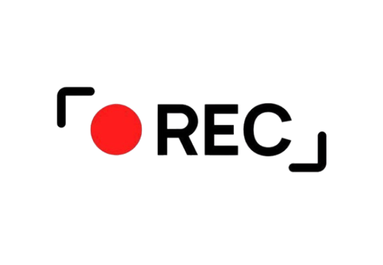

Vidéo Backstage Flor'Ale
Cette première vidéo met en avant le travail de montage et la narration visuelle. J’y ai joué sur les plans, le rythme et les transitions pour créer un rendu dynamique et immersif.


Cette première vidéo met en avant le travail de montage et la narration visuelle. J’y ai joué sur les plans, le rythme et les transitions pour créer un rendu dynamique et immersif.
Pour cette séquence, j’ai travaillé l’ambiance, la mise en scène et la cohérence visuelle. L’objectif était de faire passer une atmosphère claire et immersive, avec une structure simple mais efficace.
Cette vidéo souligne la partie création audiovisuelle du portfolio, avec du montage, de la composition et un travail sur le rythme visuel afin de rendre le message plus percutant et mémorable.